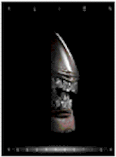

Contents | Features | Reviews | News | Archives | Store |
 |
|
| Movie Credits | Buy It! |
Alien Resurrection
Review by Eddie Cockrell
Posted 26 November 1997
|  | Directed by Jean-Pierre Jeunet Starring
Sigourney Weaver, Winona Ryder, Screenplay by Joss Whedon Based on characters created by |
"Was it everything you hoped for?" the newly constituted Lieutenant First Class Ellen Ripley (Sigourney Weaver) asks a stunned group of hardcases who've just had a harrowing firsthand encounter with one of the hydroponic aliens she's been fighting on and off throughout the galaxy in frenzied bursts for in excess of two and a half centuries. In truth it is: the crafty continuation of a movie franchise at once rousing and reflective – genetics have been added to the traditional mix of greed, glop and guns – Alien Resurrection goes about its gooey business with a renewed sense of purpose and a maliciously funny and audience-friendly appreciation of the perpetual peril the put-upon heroine once again finds herself in.
Two hundred years after Ripley's unfortunate fate on Fiorina 161, a team of scientists circling Pluto on the top-secret United Systems Military research station Auriga have successfully cloned her (after seven false starts) in order to birth a baby Queen for study and eventual domestication of the species. Following that successful procedure, the new Ripley (Sigourney Weaver), whose DNA is entwined with that of her enemy, becomes a disposable commodity to corrupt General Perez (Dan Hedaya) and surgical team leaders Wren (J.E. Freeman) and Gediman (Brad Dourif).
Into this already-tense mix sails the Betty, a dilapidated freighter manned by a scruffy group of mercenaries, prominent among whom are leader Elgyn (Michael Wincott), wise-cracking goon Johner (Ron Perlman), paralyzed mechanic Vriess (Dominique Pinon) and spooky, waif-like mechanic Annalee Call (Winona Ryder). After conducting their nefarious business of selling warm, presumably pilfered bodies to Perez for alien research, all hell breaks loose as the aliens escape their pens, the pirates commandeer the Auriga, and a mad scramble is on to reach the dubious safety of the Betty – every thing for itself – as the conjoined vessels approach earth on a pre-programmed distress course.
With hair as limp and straggly as her new, listless approach to life, Ripley is literally a shadow of her former self, a cynical shell who in the course of her long voyage of despair has been screwed over by larcenous systems, devious people (human and synthetic) and capricious fate to the point where her every movement is numb reaction to the horror around her that just won't stop. "I don't even really think Ripley is that strong," Weaver reveals. "[Although] she may be in this one, because she is ... different."
The inventive original screenplay of Joss Whedon (Toy Story, Buffy the Vampire Slayer, uncredited work on Twister, Waterworld and Speed) has invigorated the franchise through bold black humor and a genuinely legitimate resolution of the provocative yet somehow cheap climax of the previous entry that takes the entire notion of Ripley vs. the mysterious species (nobody's ever bothered to give them a name, save Aliens' half-hearted "xenomorph") to entirely new and, ahem, fertile levels. "Being asked to do an Alien movie was like being offered the Grail," he remembers. "I grew up on them. Being a fan helps because I was one of those guys sitting on my couch saying 'they should let me write an Alien movie.' And they did, so I had the opportunity to really sit down and think, how do I satisfy myself as a fan?"
Whedon's solution to the tricky question of how to bring Ripley back from the dead was OK with Weaver, who'd had enough (thus the ending of Alien3) and was ready to bail altogether (this is the second film in the franchise on which she's gotten a co-producer credit). "I remember sitting in one of the exec's offices and they said they were writing this script, and I was stunned frankly because one of the reasons I died was really to liberate this series from Ripley, 'cause I didn't want her to keep waking up, 'Oh my god, there's a monster on board.' I didn't want her to become like this figure of fun that no one ever listened to and kept waking up in one situation worse than the next. So for the sake of the series and also because I heard they were going to do Alien vs. Predator, something I thought sounded awful, I wanted out... They told me they were writing a new draft and that I would find it very provocative how I was brought back... I thought it was amazing." One question: who is this "they"? Does United Systems Military (formerly the "Company") control everything now?
Reinvigorating the look of Alien Resurrection is the sensibility of French director Jean-Pierre Jeunet, whose previous films Delicatessen (1991) and The City of Lost Children (1995) point directly to the familiar yet exotic and new confines of the Auriga and the Betty (which have the same spooky, almost Victorian feel as the interior of Orson Welles' magnificent Amberson mansion) as well as strange obsessions with flesh (the new Ripley is described as a "meat byproduct") and cloning (both Perlman and Pinon co-star in City). Jeunet tips his hand early on, as the credit sequence examines the hideously disfigured first seven attempts at Ripley through a distorted lens.
Ryder is just OK in a purposefully understated role, the principal attraction of which is her inscrutable motivation, the revelation of which is a true surprise (although the reason she's dogging Ripley can be guessed at but is never made entirely clear). Perlman and Pinon make the greatest impact among the resolutely grotesque supporting players, although Freeman is a convincing menace, Dourif goes pleasingly over the top in two scenes that seem custom made for his brand of beetle-browed weirdness and Hedaya is a tightly-wrapped menace who is missed when his inevitable end comes all too soon in the picture.
Definite minuses include the inevitable claustrophobia of the environments necessary for these stories ("a lot of running down corridors," Ryder calls it) as well as John C. Frizzell's colorless score.
In the end, Alien Resurrection works both as a stand-alone action extravaganza with strong nods to other genre faves including The Poseidon Adventure and Day of the Dead, and as a continuation of perhaps the strongest female character in contemporary cinema. "What happens now?" Call asks, in a final grace note that gives nothing away in the enjoyment of the film. "I don't know," answers Ellen Ripley the survivor, irrevocably changed but somehow wiser and certainly stronger for her ordeal – which may not yet be over, "I'm a stranger here myself." Such a weary redemption is indeed all one could hope for.
Alien Resurrection is even more fun (is that really the word for it?) if you've ingested the first three installments on your home media of choice as a kind of appetizer before the main course. Nothing less than a mirror of the decades in which they were made (innocence gives way to braggadocio, then despair and cynical acceptance), the trilogy is an interlocking triumph of planning and forethought. No time? Here's a brief gloss on each, sort of a Ripley redux:
Ridley Scott's surprising, smoke-filled scare fest is the Old Dark House of space movies – more horror than sci-fi, really – in which big-haired Weaver (billed just below Tom Skerritt's doomed Captain Dallas) first battles the "perfect organism" that methodically picks off everyone on the earth-bound mineral tanker Nostromo after bursting through John Hurt's chest (Veronica Cartwright's split-second reaction of sheer terror was achieved by springing the now-legendary special effect on the clueless actors). The seeds of then-Chief Warrant Officer Ripley's series-long mistrust of treacherous androids is planted when the synthetic Ash (Ian Holm) disobeys her direct order and perhaps unwittingly allows the beast on board, the all-encompassing twin themes of imperialism and greed via the Nostromo's pre-programmed orders to investigate potential mining (colonization?) opportunities and Ash's recognition that the things might actually have some biological (read: monetary) value. H.R. Giger's Lovecraftian designs remain unsettlingly memorable today, as does the eerie beauty of Jerry Goldsmith's languid score. "What are my chances?" Ripley types in to the computer mainframe, dubbed "Mother" (the Auriga's is called "Father"). "Does not compute," the machine replies with ominous serenity. "Crew expendable." "You bitch!" Ripley calls it later, prefiguring one of the more enduring motifs of the whole series. And how's this for verisimilitude? Alien was filmed at Bray Studios, the same British soundstages that hosed the classic Hammer horror films.
Helpless shock gives way to swaggering optimism in director James Cameron's titanic, gizmo-crazed sequel, which devotes over two hours to the medium-haired Ripley's reluctant return to the now-colonized LV 426 – planet of the eggs – 57 years after the events of Alien, the reluctant adviser to a cocksure group of starship troopers (complete with cute chick pilot) on a "bug hunt" that goes horribly awry. Skeptical of her story (the vaporized M-Class freighter Nostromo was apparently worth some $42 million "adjusted" dollars – less than a quarter of the cost of Cameron's upcoming movie) the centralized Company offers her a reinstatement of flight status in the form of corporate weasel chaperone Burke (Paul Reiser doing a prototype Paul Buckman), whose nefarious scheme to smuggle the alien through galactic customs attached to Ripley's face prefigures the cryotube piracy of Alien Resurrection. Our heroine's also saddled with another creepy android, Bishop (Lance Henriksen), who prefers the term "artificial person" and turns out to be OK – for the moment. Maybe the most Freudian film of the bunch, as Ripley protects the resourceful young lone survivor Rebecca "Newt" Jordan (Carrie Henn), flirts over heavy weaponry with Corporal Dwayne Hicks (Michael Biehn) and squares off against the Queen for the first time in the bowels of the massive Atmosphere Processor. Aliens marks the series debut of Alien Effects Designers Alec Gillis and Tom Woodruff, who built beasts for all subsequent films ("Tom in fact is often the guy in the suit," Weaver told an interviewer recently), while James Horner's memorable score is a clangy, militaristic industrial symphony.
Ripley is engulfed by darkness and despair in director David Fincher's claustrophobic and underrated big-screen debut (which looks a lot better in light of Seven – photographed by Alien Resurrection cinematographer Darius Khondji – and The Game), as she crash lands on Fiorina "Fury" 161, a remote, nearly deserted, Class C Prison, maximum security, Double Y Chromosome-Work Correctional Facility after drifting in space – again – for an unspecified time. Shorn of her hair, Ripley is grief-stricken over the loss of Newt and Hicks ("they have been released from all darkness and pain," says Warden Andrews [Brian Glover] almost wistfully) but manages to salvage enough of Bishop to verify what's been killing the weaponless inmates of this bleak futuristic big house, all of whom appear to be British – one of them sings a snatch of the 1969 Zager & Evans chestnut, "In the Year 2525 (Exordium & Terminus)", before being ground into chow. "Do you have any faith, sister?" asks the lone Yank, Dillon (Charles S. Dutton). "Not much," says Ripley, who promptly loses the only lover she's had during the entire ordeal (Charles Dance's unexpectedly tender and dignified Clemens – clemency?) to the marauding alien. High points include the implanted Ripley's recitation of the line "somebody's got to kill me" directly into the camera and the most genuinely unsettling finale of the series – an unrelentingly tragic denouement (featuring Bishop's return, sort of) which is redeemed spectacularly by the principal plot twist of Alien Resurrection.
Contents | Features | Reviews | News | Archives | Store
Copyright © 1999 by Nitrate Productions, Inc. All Rights Reserved.